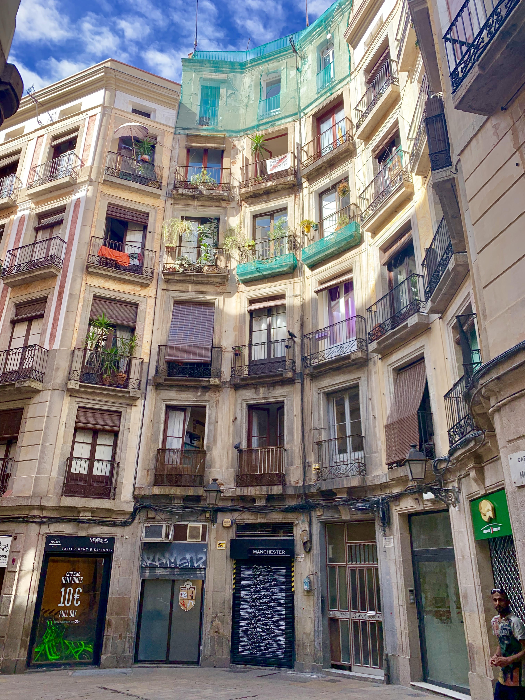
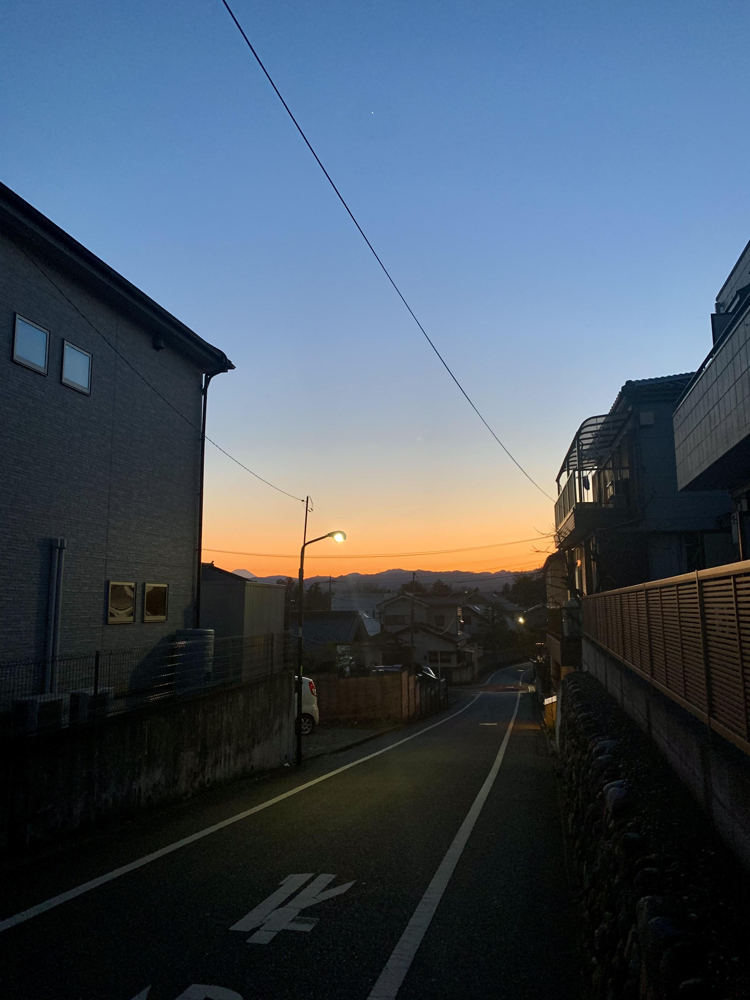
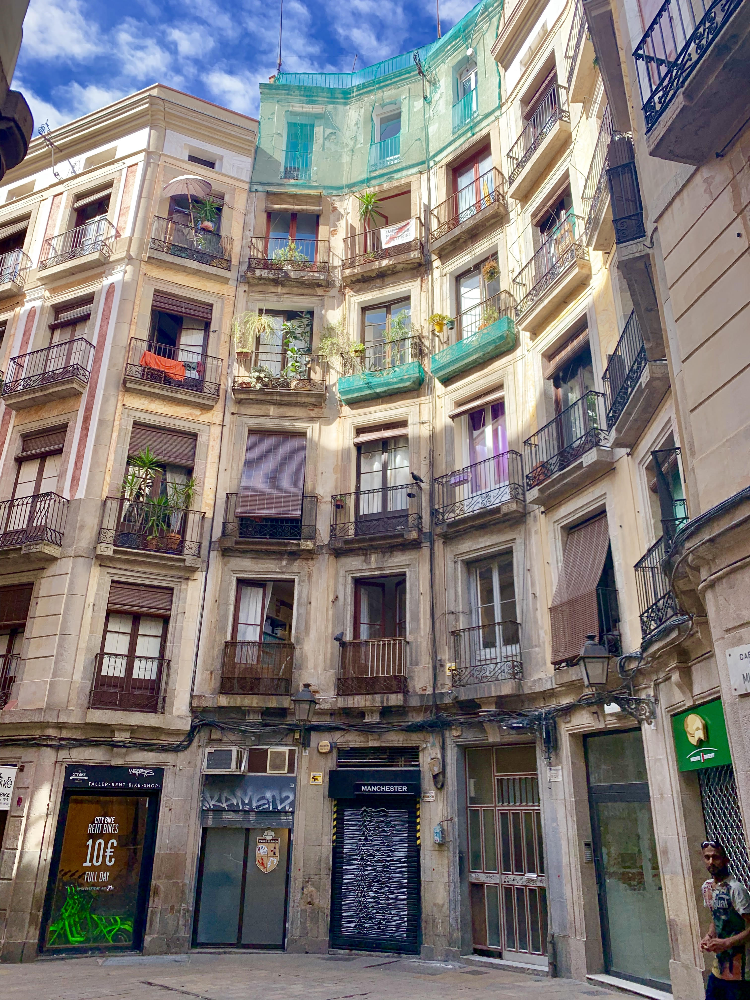
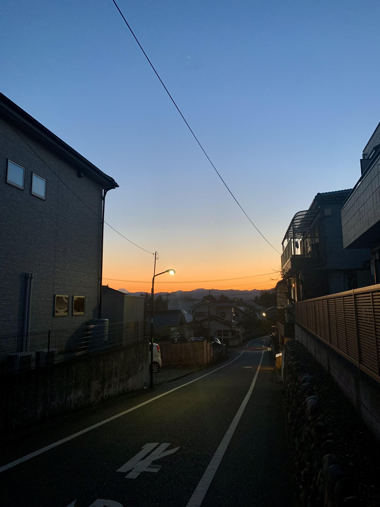

Hi, welcome to my website, Unique Travels! My name is Andie, and I've created this page for my WebTech class at Babson College, and I hope you enjoy looking through my website! I have always been very interested in traveling, and have added some photos I've taken from traveling in the past!
 


